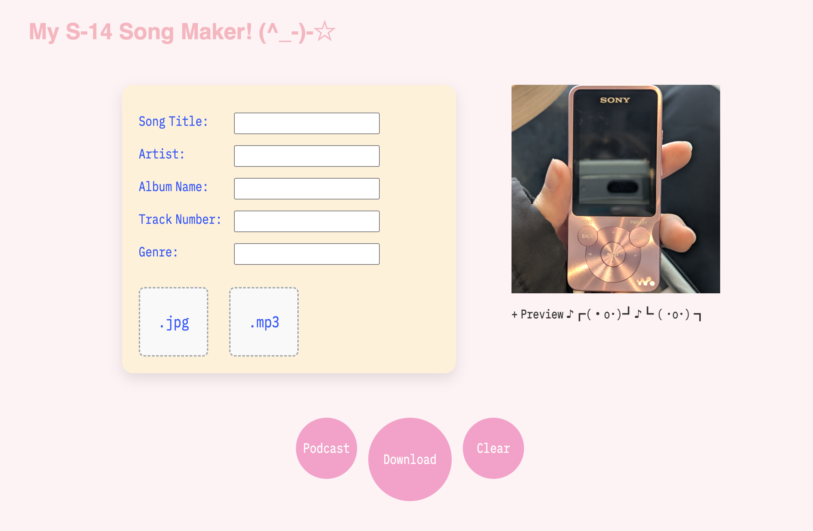
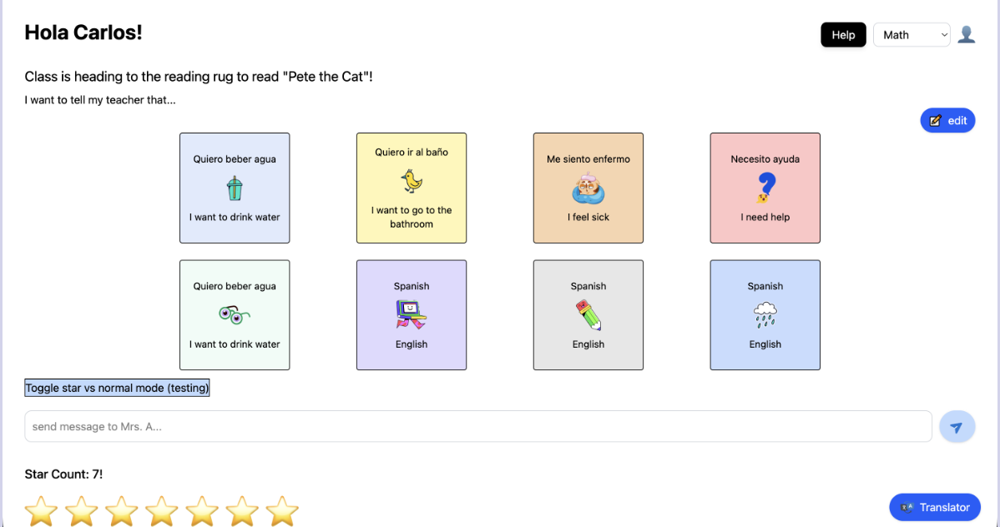
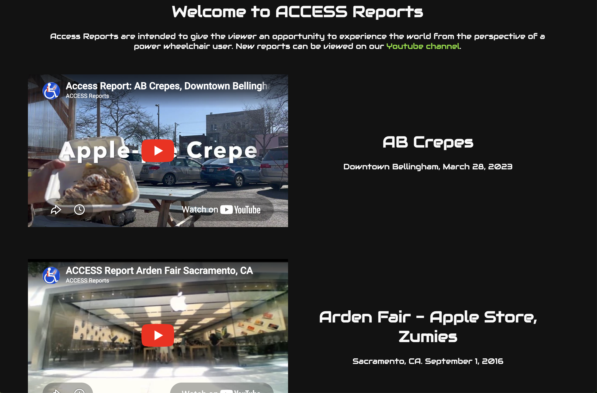
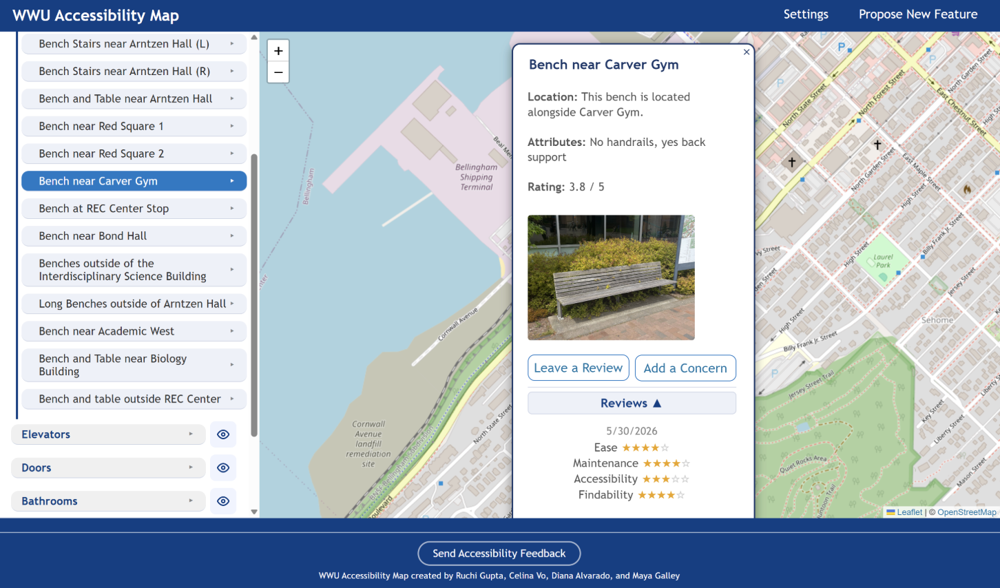

Projects
Browser MP3 File Tagger (Personal)

A project dedicated to my Sony Walkman mp3 player.
Older devices sometimes require specific file and data formats to display information correctly. I found it tedious to determine the correct presets for my specific device and time-consuming to find a free mp3 file tagging software to set them. To make the process easier on others, I made my own browser-based mp3 tagger designed to be simple and quick to use. Although I don't have a count of users, I have personally used this project many times and have found it helpful for quickly dropping a podcast onto my mp3 player for later listening.
Try it hereHTML, CSS, JavaScript
Classroom Communication Aide (Team)

A simple website that edits mp3 file metadata
HTML, CSS, JavaScript
REMPet — Dream Journal Companion (Personal)
A simple website that edits mp3 file metadata
HTML, CSS, JavaScript
Gryphon Website for Disabilities (Internship)

A simple website that edits mp3 file metadata
HTML, CSS, JavaScript
WWU Accessibility Map (Team)

A simple website that edits mp3 file metadata
HTML, CSS, JavaScript